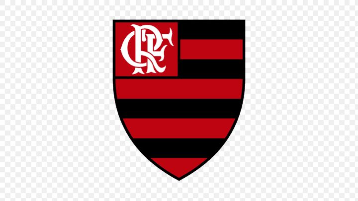

FLAMENGO
Por: Matheus
Como foi o inicio da historia do Clube de Regatas do Flamengo.

"Cuble de regatas do Flamengo fudado em 1895 no Rio de Janeiro é uma das maiores potência poliesportiva do Brasil e das Américas amplamente reconhecido com a maior torcida de futebol do mundo"
PRINCIPAIS TITULOS
Conheça um pouco sobre o maior do Brasil
PRINCIPAIS TITULOS
O clube carrega uma trajetória de conquistas pesadas nos cenários nacional e internacional:
Mundial: 1 Copa Intercontinental (1981) Continentais: 4 Copas Libertadores da América (1981, 2019, 2022 e 2025) e 1 Recopa Sul-Americana (2020) Nacionais: 8 títulos do Campeonato Brasileiro (Série A) e 5 títulos da Copa do Brasil Estaduais: Mais de 38 taças do Campeonato Carioca, sendo o maior vencedor da história da competição..

"consolidando o clube como um dos mais vitoriosos do futebol brasileiro. Abaixo, você confere a lista atualizada dos troféus mais importantes da história"